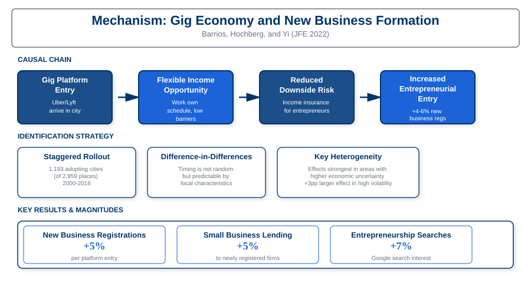

Launching with a Parachute: The Gig Economy and Entrepreneurial Entry
Abstract
We examine how the rise of the gig economy affects entrepreneurial entry by providing aspiring entrepreneurs with a flexible "safety net" during the risky early stages of new venture creation. Using the staggered entry of Uber across U.S. cities as a natural experiment, we find that gig economy platforms significantly increase entrepreneurship rates, particularly among individuals who face high opportunity costs and income uncertainty.
Our identification strategy exploits variation in Uber's entry timing across 195 U.S. cities between 2009 and 2016. We find that Uber's entry increases new business registrations by 3-5%, with larger effects in cities with higher pre-existing entrepreneurship rates. The mechanism operates through reduced downside risk: gig work provides a flexible income source that entrepreneurs can use to smooth consumption while building their businesses, effectively functioning as a "parachute" that makes the leap into entrepreneurship less risky.
Key Findings

Figure 1: Coefficient estimates and 95% confidence intervals from difference-in-differences models showing the effect of gig platform entry on new business registrations across different sample specifications.
Increased Entrepreneurial Entry
Uber's entry into a city increased new business registrations by 3-5%, representing thousands of additional new ventures annually across affected markets.
Safety Net Mechanism
Gig economy work acts as a flexible safety net, allowing entrepreneurs to earn supplemental income while building their businesses, thus reducing the financial risk of entrepreneurship.
Heterogeneous Effects
The entrepreneurship boost was strongest among individuals with high opportunity costs, minorities, and those in areas with limited access to traditional financing or unemployment insurance.
Long-Term Business Formation
The effect persists over time, suggesting that gig platforms enable sustained increases in entrepreneurial activity rather than just temporary experimentation.
Causal Mechanism & Identification

Figure 2: Conceptual framework showing how gig platform entry reduces entrepreneurial downside risk through income smoothing, with the identification strategy and key mechanisms.
Research Contribution
This paper contributes to several literatures. First, it provides the first large-scale empirical evidence on how labor market flexibility affects entrepreneurial entry. While prior work has focused on health insurance, unemployment benefits, and other social safety nets, we show that private-sector innovations in labor markets can have similar effects by reducing entrepreneurial risk.
Second, we contribute to the growing literature on the gig economy by documenting an important positive externality: beyond providing employment opportunities for gig workers themselves, these platforms facilitate broader entrepreneurial activity. This suggests that the social value of gig platforms may extend beyond the direct labor market effects typically studied.
Third, our findings inform debates about entrepreneurship policy and economic dynamism. The results suggest that policies or institutions that provide income flexibility and downside risk protection can promote entrepreneurship without requiring direct government intervention or subsidies.
Policy Implications
Our findings have important implications for understanding the broader economic effects of the gig economy. While much policy debate has focused on labor protections and worker classification, our results highlight a significant positive externality: gig platforms promote entrepreneurship by reducing downside risk for aspiring business owners.
The results also suggest that labor market flexibility can be an important driver of economic dynamism. Policies that enable workers to more easily combine multiple income sources may promote entrepreneurship without requiring direct subsidies or government programs. This has implications for debates about work arrangements, independent contracting, and the future of work.